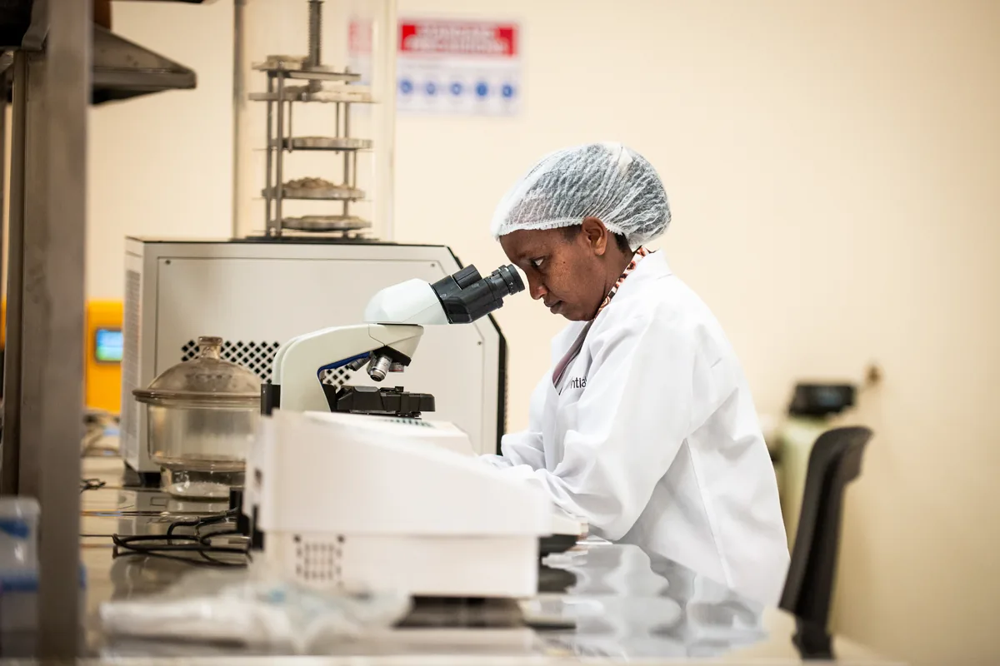

26 million
Lives saved by PEPFAR
Since 2003, a $100 billion bipartisan
investment has supported 20.6 million people
on antiretroviral therapy.
Since 1961 USAID was America's premier foreign assistance agency. Its successes were real; so were its failures.
For those of us who support foreign assistance, it is tempting to bring back what USAID was. That's not good enough.
It's time for what comes next. The New Foreign Assistance is the conservative voice for reform.
The Record
American foreign assistance has produced some of the most successful international programs in history. The numbers tell the story.
26 million
Lives saved by PEPFAR
Since 2003, a $100 billion bipartisan
investment has supported 20.6 million people
on antiretroviral therapy.
940 000
Malaria deaths prevented
The President's Malaria Initiative prevented
an estimated 185 million cases between 2005
and 2017.

$17 in benefits
In benefits per dollar invested
Development Innovation Ventures funded
evidence-backed solutions and let results
speak.

Factory 19: Morphat at the factory. Photo: Mia Collis / Essential
The three programs above don't capture everything.
The Millennium Challenge Corporation pioneered conditional aid that rewarded country reform. Feed the Future lifted 23.4 million people out of poverty through agriculture-led growth. U.S. Senate Foreign Relations Committee, bipartisan resolution on Feed the Future (Risch, Casey, McCollum, Smith, 2020) Prosper Africa, launched under the first Trump administration, mobilized American private capital across the continent. The Higher Education Solutions Network put America's top universities on the hardest development questions.
When American foreign assistance has been focused and bipartisan, it has changed outcomes at scale.
The Diagnosis
USAID's failures were not about its people or its mission. They were about the slow accretion
of rules, mandates, and reporting requirements that, over decades, crowded out the work of
development. Each well-meaning reform added a layer…nothing was ever removed.
What went wrong
What comes next
01
Trading partners and allies, not a
global safety net.
02
Public goods and systems change.
Leave the rest to civil society and
competent local governments.
03
Work through markets where
markets can deliver. Support them;
don't displace them.
04
Reformers earn deeper partnership.
Predatory governments do not.
05
Set clear objectives. Measure outcomes.
Reallocate from what fails to
what works.
06
Clear end dates. Self-reliance is the
goal, not permanent
dependency.
Live Tracker
A framework for what U.S. foreign assistance should look like.
The Long View
In 1820, every region was poor. Since then, average incomes have
risen everywhere — at very different rates.
Source: Maddison Project Database (Bolt & van Zanden, 2023), via Our World in Data. GDP per capita in 2011 international dollars.
Contact